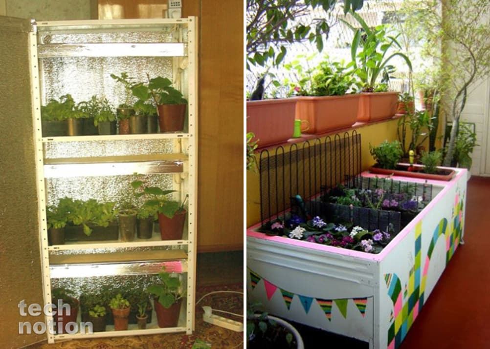
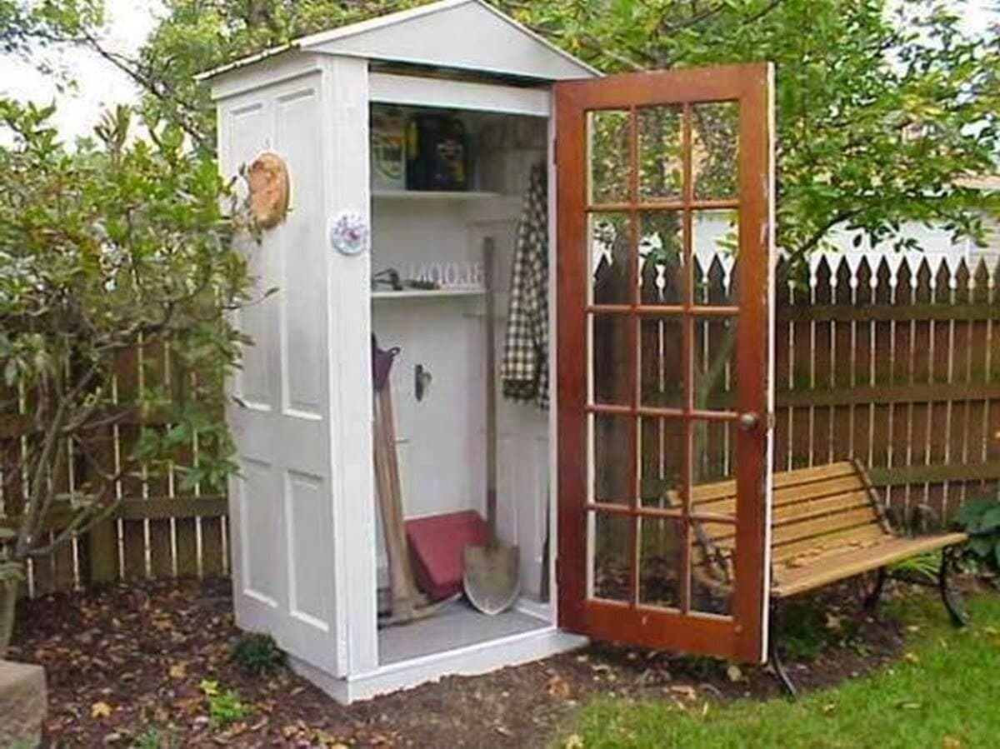
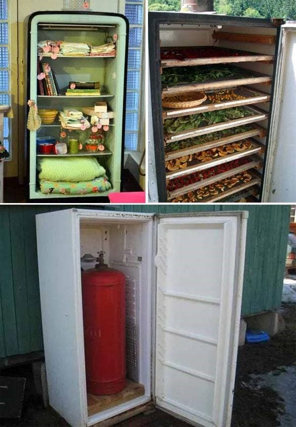

Старый холодильник – утилизировать или подарить ему вторую жизнь?
Ваш холодильник совсем старый, а вы уже присмотрели новенькую модель? Не спешите отправлять технику на утилизацию. Подарите ей вторую жизнь. Давайте, рассмотрим решения, которые позволят жить с чистой совестью без переживаний о том, что Вам пришлось уничтожить раз и навсегда любимую устаревшую технику.
Самое милое дело – это подарить оборудование или отправить на дачу. Так, старый друг продолжит выполнять свою функцию по хранению продуктов. Если нет такой возможности, то выставите агрегат на продажу, возможно, кто-то ищет для себя именно такой недорогой и оптимальный вариант для дома или на запчасти.
Разместите объявление, лучше платное. Самая крупная площадка Kufar — барахолка в Беларуси. Всегда есть тот, кто тянет в дом разный хлам, как герой поэмы Гоголя «Мёртвые души» Степан Плюшкин.
Можно сделать благородное дело – отдать холодильник нуждающимся, в Красный крест, например. Предварительно, не забудьте помыть технику. Ну, или включайте не убиваемый агрегат по праздникам и ни за что не продавайте, а вдруг пригодится еще.
Старые холодильники для многих — память, ведь когда-то на него было потрачено несколько зарплат. Особенно это касается моделей времен СССР, которые способны прослужить еще ни одно столетие.
Как подарить холодильнику вторую жизнь?
Не хотите с холодильником прощаться? Возьмите несколько решений на заметку, сдать на металлолом всегда успеете:
- Контейнер под рассаду. Дверца демонтируется, а камера наполняется грунтом.

- Коптильня. В корпусе делается отверстие с верхней стороны, монтируется дымоход. Устанавливается устройство для копчения.
- Инкубатор. Для нагрева применяются лампы накаливания.
- Шкаф или сарай. Здесь можно хранить всевозможные вещички. Вариантов декора множество.

- Сушилка для фруктов и овощей. Из корпуса удаляется стекловата, мотор и электроника. Решетки оставляются.
- Улей. Пчелиный дом для создания требует специальных знаний.
- Теплица. Демонтировать крышу и применить пленку.
- Погреб. Установить в землю, положив все необходимое и оставить храниться.

- Кондиционер. Вариант шуточный, но вдруг кому-то понравится – включайте устройство в жару и сидите в нем, как эскимосы в своих иглу.
Ещё варианты использования старого холодильника:
1. Передать на благотворительность. Если холодильник исправен или требует минимального ремонта, его можно подарить нуждающимся или благотворительным организациям.
2. Использование в качестве места хранения инструментов, консервации и других предметов и вещей.
3. Переделать в теплицу для выращивания растений или хранилище для садового инвентаря.
4. Создание оригинальных предметов интерьера или мебели. Например, сделать из корпуса оригинальный шкаф, барную стойку или декоративный элемент.
Вопрос утилизации или повторного использования старого холодильника
?Почему важно правильно утилизировать
- Для экологическая безопасности. Старые холодильники содержат вредные вещества, такие как фреон, тяжелые металлы (например, свинец, ртуть), которые могут нанести вред окружающей среде и здоровью человека.
- Для соблюдения законодательства. В большинстве стран, в точности и в Республике Беларусь, существуют требования к утилизации бытовой техники, чтобы предотвратить загрязнение окружающей среды.
Правильная утилизация— лучший выбор для защиты окружающей среды!
Как правильно утилизировать холодильник
- Обратитесь в специализированные пункты приёма бытовой техники или организации по сбору отходов.
- Некоторые магазины электроники и бытовой техники предоставляют услуги по вывозу и утилизации старых устройств при покупке нового.
- Не выбрасывайте холодильник в обычный мусор — это запрещено и опасно.
Если старый холодильник сломался?
Если техника вышла из строя и несмотря на то, что устарела Вы ее планируете оставить, то непременно дайте ей шанс продолжать оставаться вашим верным помощником. Сегодня много фирм, которые готовы за разумную цену вернуть работоспособность холодильнику. Почините агрегат и сэкономьте на покупке нового. Заполните форму на главной странице сайта или звоните по телефону +375 (29) 164-65-10 и в ближайшее время с вами свяжется мастер.
Холодильник – полезное устройство, не только для хранения продуктов, но и в быту. Не спешите ставить крест на устаревшей технике, отремонтируйте ее или подарите ей новую жизнь.